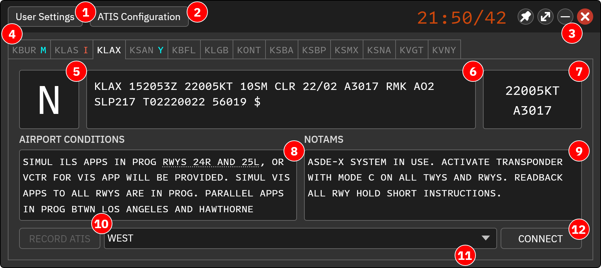

本页目录
主窗口
主窗口集中管理当前配置中的所有 ATIS 席位。
| 区域 / 按钮 | 用途 |
|---|---|
| User Settings | 打开用户设置 |
| ATIS Configuration | 打开席位配置 |
| 窗口控制 | 置顶、切换迷你窗口、最小化和退出；双击标题栏切换迷你窗口 |
| 席位列表 | 选择当前配置中的机场席位；本机已连接席位优先显示 |
| ATIS 字母 | 左键切到下一字母，右键切到上一字母；更新闪烁时先确认更新 |
| METAR | 当前席位气象原报 |
| 风与气压 | 当前地面风及高度表设定 |
| AIRPORT CONDITIONS | 机场运行情况，点击标题管理固定消息 |
| NOTAMS | 航行通告，点击标题管理固定消息 |
| RECORD ATIS | 符合录音条件时打开录音窗口 |
| Presets | 切换预设 |
| CONNECT / DISCONNECT | 连接或断开 CAN 席位 |
上线前检查
确认选中正确的机场、ATIS 类型、预设、频率和字母。检查 METAR 时间以及运行跑道、进近、通告。涉及语音时，先确认已经成功生成或录制音频。
关于原版的红色共享席位
原版通过 ATIS Hub 显示其他管制员发布的红色席位和共享字母。CAN 当前没有接通该 Hub，因此不要把这套共享显示当作 CAN 席位占用查询。席位是否可用，应按 CAN 的实际网络状态和协调流程确认。
操作截图参考
以下为上游原版截图，保留英文标签。用于定位操作；品牌、登录字段与网络行为以本页 CAN 说明为准。
